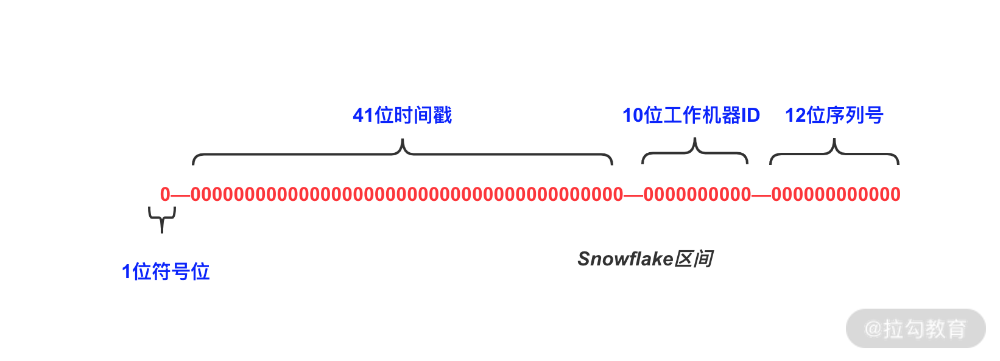

- 00 开篇词：搭建分布式知识体系，挑战高薪 Offer.md.html
- 01 如何证明分布式系统的 CAP 理论？.md.html
- 02 不同数据一致性模型有哪些应用？.md.html
- 03 如何透彻理解 Paxos 算法？.md.html
- 04 ZooKeeper 如何保证数据一致性？.md.html
- 05 共识问题：区块链如何确认记账权？.md.html
- 06 如何准备一线互联网公司面试？.md.html
- 07 分布式事务有哪些解决方案？.md.html
- 08 对比两阶段提交，三阶段协议有哪些改进？.md.html
- 09 MySQL 数据库如何实现 XA 规范？.md.html
- 10 如何在业务中体现 TCC 事务模型？.md.html
- 11 分布式锁有哪些应用场景和实现？.md.html
- 12 如何使用 Redis 快速实现分布式锁？.md.html
- 13 分布式事务考点梳理 + 高频面试题.md.html
- 14 如何理解 RPC 远程服务调用？.md.html
- 15 为什么微服务需要 API 网关？.md.html
- 16 如何实现服务注册与发现？.md.html
- 17 如何实现分布式调用跟踪？.md.html
- 18 分布式下如何实现配置管理？.md.html
- 19 容器化升级对服务有哪些影响？.md.html
- 20 ServiceMesh：服务网格有哪些应用？.md.html
- 21 Dubbo vs Spring Cloud：两大技术栈如何选型？.md.html
- 22 分布式服务考点梳理 + 高频面试题.md.html
- 23 读写分离如何在业务中落地？.md.html
- 24 为什么需要分库分表，如何实现？.md.html
- 25 存储拆分后，如何解决唯一主键问题？.md.html
- 26 分库分表以后，如何实现扩容？.md.html
- 27 NoSQL 数据库有哪些典型应用？.md.html
- 28 ElasticSearch 是如何建立索引的？.md.html
- 29 分布式存储考点梳理 + 高频面试题.md.html
- 30 消息队列有哪些应用场景？.md.html
- 31 集群消费和广播消费有什么区别？.md.html
- 32 业务上需要顺序消费，怎么保证时序性？.md.html
- 33 消息幂等：如何保证消息不被重复消费？.md.html
- 34 高可用：如何实现消息队列的 HA？.md.html
- 35 消息队列选型：Kafka 如何实现高性能？.md.html
- 36 消息队列选型：RocketMQ 适用哪些场景？.md.html
- 37 消息队列考点梳理 + 高频面试题.md.html
- 38 不止业务缓存，分布式系统中还有哪些缓存？.md.html
- 39 如何避免缓存穿透、缓存击穿、缓存雪崩？.md.html
- 40 经典问题：先更新数据库，还是先更新缓存？.md.html
- 41 失效策略：缓存过期都有哪些策略？.md.html
- 42 负载均衡：一致性哈希解决了哪些问题？.md.html
- 43 缓存高可用：缓存如何保证高可用？.md.html
- 44 分布式缓存考点梳理 + 高频面试题.md.html
- 45 从双十一看高可用的保障方式.md.html
- 46 高并发场景下如何实现系统限流？.md.html
- 47 降级和熔断：如何增强服务稳定性？.md.html
- 48 如何选择适合业务的负载均衡策略？.md.html
- 49 线上服务有哪些稳定性指标？.md.html
- 50 分布式下有哪些好用的监控组件？.md.html
- 51 分布式下如何实现统一日志系统？.md.html
- 52 分布式路漫漫，厚积薄发才是王道.md.html
25 存储拆分后，如何解决唯一主键问题？
上一课时我们讲到了分库分表，现在考虑这样一个问题：在单库单表时，业务 ID 可以依赖数据库的自增主键实现，现在我们把存储拆分到了多处，如果还是用数据库的自增主键，势必会导致主键重复。
那么我们应该如何解决主键问题呢？这一课时就来看下生成唯一主键相关的知识。
生成主键有哪些方案
如果用最简单的方式来生成唯一主键，可以怎么做呢？一个最直接的方案是使用单独的自增数据表，存储拆分以后，创建一张单点的数据表，比如现在需要生成订单 ID，我们创建下面一张数据表：
CREATE TABLE IF NOT EXISTS `order_sequence`(
`order_id` INT UNSIGNED AUTO_INCREMENT,
PRIMARY KEY ( `order_id` )
)ENGINE=InnoDB DEFAULT CHARSET=utf8;
当每次需要生成唯一 ID 时，就去对应的这张数据表里新增一条记录，使用返回的自增主键 ID 作为业务 ID。
这个方案实现起来简单，但问题也很明显。首先，性能无法保证，在并发比较高的情况下，如果通过这样的数据表来创建自增 ID，生成主键很容易成为性能瓶颈。第二，存在单点故障，如果生成自增 ID 的数据库挂掉，那么会直接影响创建功能。
在实际开发中，实现唯一主键有多种方案可选，下面介绍几种常见的实现思路，分别是使用 UUID、使用 Snowflake 算法，以及配置自增区间在内存中分配的方式。
使用 UUID 能否实现
UUID 大家都很熟悉，在 Java 语言中，就内置了 UUID 的工具类实现，可以很容易地生成一个 UUID：
public String getUUID(){
UUID uuid=UUID.randomUUID();
return uuid.toString();
}
那么是否可以应用 UUID 生成唯一主键呢？
UUID 虽然很好地满足了全局唯一这个要求，但是并不适合作为数据库存储的唯一主键。我们输出一个 UUID 看一下，比如：135c8321-bf10-46d3-9980-19ba588554e8，这是一个 36 位的字符串。
首先 UUID 作为数据库主键太长了，会导致比较大的存储开销，另外一个，UUID 是无序的，如果使用 UUID 作为主键，会降低数据库的写入性能。
以 MySQL 为例，MySQL 建议使用自增 ID 作为主键，我们知道 MySQL InnoDB 引擎支持索引，底层数据结构是 B+ 树，如果主键为自增 ID 的话，那么 MySQL 可以按照磁盘的顺序去写入；如果主键是非自增 ID，在写入时需要增加很多额外的数据移动，将每次插入的数据放到合适的位置上，导致出现页分裂，降低数据写入的性能。
基于 Snowflake 算法
Snowflake 是 Twitter 开源的分布式 ID 生成算法，由 64 位的二进制数字组成，一共分为 4 部分，下面是示意图：

其中：
- 第 1 位默认不使用，作为符号位，总是 0，保证数值是正数；
- 41 位时间戳，表示毫秒数，我们计算一下，41 位数字可以表示 241 毫秒，换算成年，结果是 69 年多一点，一般来说，这个数字足够在业务中使用了；
- 10 位工作机器 ID，支持 210 也就是 1024 个节点；
- 12 位序列号，作为当前时间戳和机器下的流水号，每个节点每毫秒内支持 212 的区间，也就是 4096 个 ID，换算成秒，相当于可以允许 409 万的 QPS，如果在这个区间内超出了 4096，则等待至下一毫秒计算。
Twitter 给出了 Snowflake 算法的示例，具体实现应用了大量的位运算，可以点击具体的代码库查看。
Snowflake 算法可以作为一个单独的服务，部署在多台机器上，产生的 ID 是趋势递增的，不需要依赖数据库等第三方系统，并且性能非常高，理论上 409 万的 QPS 是一个非常可观的数字，可以满足大部分业务场景，其中的机器 ID 部分，可以根据业务特点来分配，比较灵活。
Snowflake 算法优点很多，但有一个不足，那就是存在时钟回拨问题，时钟回拨是什么呢？
因为服务器的本地时钟并不是绝对准确的，在一些业务场景中，比如在电商的整点抢购中，为了防止不同用户访问的服务器时间不同，则需要保持服务器时间的同步。为了确保时间准确，会通过 NTP 的机制来进行校对，NTP（Network Time Protocol）指的是网络时间协议，用来同步网络中各个计算机的时间。
如果服务器在同步 NTP 时出现不一致，出现时钟回拨，那么 SnowFlake 在计算中可能出现重复 ID。除了 NTP 同步，闰秒也会导致服务器出现时钟回拨，不过时钟回拨是小概率事件，在并发比较低的情况下一般可以忽略。关于如何解决时钟回拨问题，可以进行延迟等待，直到服务器时间追上来为止，感兴趣的同学可以查阅相关资料了解下。
数据库维护区间分配
下面我们介绍一种基于数据库维护自增ID区间，结合内存分配的策略，这也是淘宝的 TDDL 等数据库中间件使用的主键生成策略。
使用这种方式的步骤如下。
- 首先在数据库中创建 sequence 表，其中的每一行，用于记录某个业务主键当前已经被占用的 ID 区间的最大值。
sequence 表的主要字段是 name 和 value，其中 name 是当前业务序列的名称，value 存储已经分配出去的 ID 最大值。
CREATE TABLE `sequence` (
`id` bigint(20) NOT NULL AUTO_INCREMENT COMMENT 'Id',
`name` varchar(64) NOT NULL COMMENT 'sequence name',
`value` bigint(32) NOT NULL COMMENT 'sequence current value',
PRIMARY KEY (`id`),
UNIQUE KEY `unique_name` (`name`)
) ENGINE=InnoDB DEFAULT CHARSET=utf8;
- 接下来插入一条行记录，当需要获取主键时，每台服务器主机从数据表中取对应的 ID 区间缓存在本地，同时更新 sequence 表中的 value 最大值记录。
现在我们新建一条记录，比如设置一条 order 更新的规则，插入一行记录如下：
INSERT INTO sequence (name,value) values('order_sequence',1000);i
当服务器在获取主键增长区段时，首先访问对应数据库的 sequence 表，更新对应的记录，占用一个对应的区间。比如我们这里设置步长为 200，原先的 value 值为 1000，更新后的 value 就变为了 1200。
- 取到对应的 ID 区间后，在服务器内部进行分配，涉及的并发问题可以依赖乐观锁等机制解决。
有了对应的 ID 增长区间，在本地就可以使用 AtomicInteger 等方式进行 ID 分配。
不同的机器在相同时间内分配出去的 ID 可能不同，这种方式生成的唯一 ID，不保证严格的时间序递增，但是可以保证整体的趋势递增，在实际生产中有比较多的应用。
为了防止单点故障，sequence 表所在的数据库，通常会配置多个从库，实现高可用。
除了上面的几种方案，实际开发中还可以应用 Redis 作为解决方案，即通过 Redis Incr 命令来实现，感兴趣的同学可以去了解一下。
总结
这一课时主要分享了实现唯一主键的几种思路，也就是我们通常说的分布式发号器，主要有使用 UUID、使用 Snowflake 算法，以及数据库存储区间结合内存分配的方式。
现在再来总结一下，一个生产环境中可用的主键生成器，应该具备哪些特性呢？
首先是生成的主键必须全局唯一，不能出现重复 ID，这对于主键来说是最基础的需求。
第二，需要满足有序性，也就是单调递增，或者也可以满足一段时间内的递增，这是出于业务上的考虑。一方面在写入数据库时，有序的主键可以保证写入性能，另一方面，很多时候都会使用主键来进行一些业务处理，比如通过主键排序等。如果生成的主键是乱序的，就无法体现一段时间内的创建顺序。
再一个是性能要求，要求尽可能快的生成主键，同时满足高可用。因为存储拆分后，业务写入强依赖主键生成服务，假设生成主键的服务不可用，订单新增、商品创建等都会阻塞，这在实际项目中是绝对不可以接受的。
你可以联系实际工作，在你负责的项目中涉及唯一主键的模块，是否也考虑了这些特性，以及具体是如何实现的，欢迎留言分享。